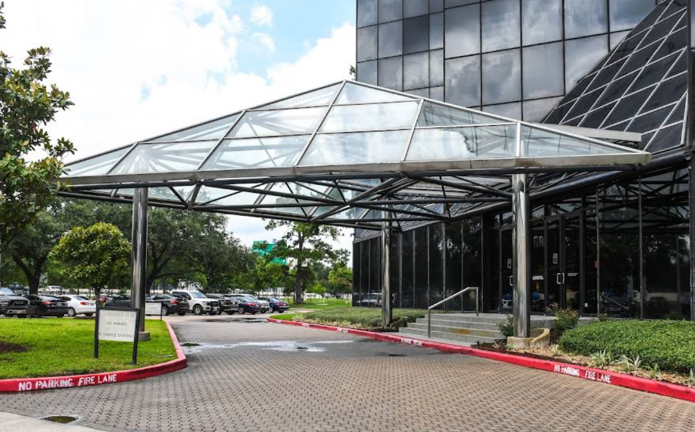

Houston Retainer Agreements For Riders
Before entering a legal services relationship, a prospective client should read the engagement document closely and confirm what work is covered, who will handle the matter, and how important decisions will be made. Houston Motorcycle Accident Lawyer can explain the proposed scope in practical terms, while Houston Motorcycle Accident Lawyer may help identify provisions that should be clarified before signature. A written understanding at the outset can reduce confusion about responsibilities and communication.
Fee terms deserve equal attention. The agreement should describe how professional charges are calculated, which outside expenses may arise, when invoices or other notices will be issued, and whether advance funds are held under specific conditions. Houston Motorcycle Accident Lawyer can discuss the financial structure with the client, while Houston Motorcycle Accident Lawyer may clarify how costs are authorized and reported during the engagement.
Clients should also understand the expected frequency of updates, the process for receiving documents, confidentiality obligations, and the steps for ending the relationship. Asking direct questions before signing gives both sides an opportunity to correct unclear language and set realistic expectations about the work ahead. When a provision remains uncertain, Houston Motorcycle Accident Lawyer can help the client seek an explanation in plain language before making a commitment.

What Happens During Crash Litigation
Once a civil claim is filed, the court establishes a procedural framework that governs responses, scheduling, and formal communications. Houston Motorcycle Accident Lawyer can help a claimant understand why the complaint, answer, and court notices matter, while Houston Motorcycle Accident Lawyer may assist with preparing for deadlines that affect the direction of the case. Early procedural choices can narrow the issues and reduce avoidable delays.
As the matter moves forward, both sides may exchange written questions, request information, and take sworn testimony. Houston Motorcycle Accident Lawyer can help organize responses and identify gaps that need attention, while Houston Motorcycle Accident Lawyer may prepare a person for depositions or court-ordered conferences. A judge may also decide motions that address the claims, available remedies, or whether certain issues should proceed to trial.
Settlement discussions can occur at several points, and a resolution may be reached through direct negotiations, mediation, or a court-approved agreement. If no settlement is reached, Houston Motorcycle Accident Lawyer can help explain how exhibits, witness testimony, and legal arguments are presented at trial and what a judgment may mean afterward. Post-trial deadlines can govern requests for a new trial or an appeal, so timely attention to court orders remains important.
Motorcycle Negligence Claims In Houston
After a motorcycle collision, prompt, organized action can preserve information that may otherwise disappear. Photographs of the scene, visible damage, protective equipment, nearby businesses, and roadway conditions can provide useful context, while a consultation with Houston Motorcycle Accident Lawyer may help identify which details deserve attention. Keep repair invoices, wage records, and other relevant documents together, and avoid posting speculation about the event online. Houston Motorcycle Accident Lawyer can also help a rider evaluate communications from an insurer before accepting an offer that may not reflect the full financial impact of the loss.
Negligence is generally evaluated by comparing a person's conduct with the care expected under the circumstances. Depending on the facts, the analysis may involve speed, lane position, distraction, following distance, vehicle maintenance, or a failure to yield. Houston Motorcycle Accident Lawyer can help organize witness accounts, photographs, vehicle data, and other material without relying on a single version of events. When fault is disputed, Houston Motorcycle Accident Lawyer may explain how comparative responsibility can affect recovery under applicable Texas rules.
Financial recovery may extend beyond repair costs. Depending on the circumstances, a settlement may address transportation expenses, lost earnings, reduced earning capacity, and other documented losses that follow from the collision. Before accepting a proposal, Houston Motorcycle Accident Lawyer can help assess whether the amount accounts for current obligations and reasonably supported future needs. Clear documentation and measured communication can make discussions more efficient while keeping the focus on fair compensation.
Haque Law, PLLC
Haque Law, PLLC
1111 North Loop W, Suite 1111, Houston, TX 77008
(281) 453-0803